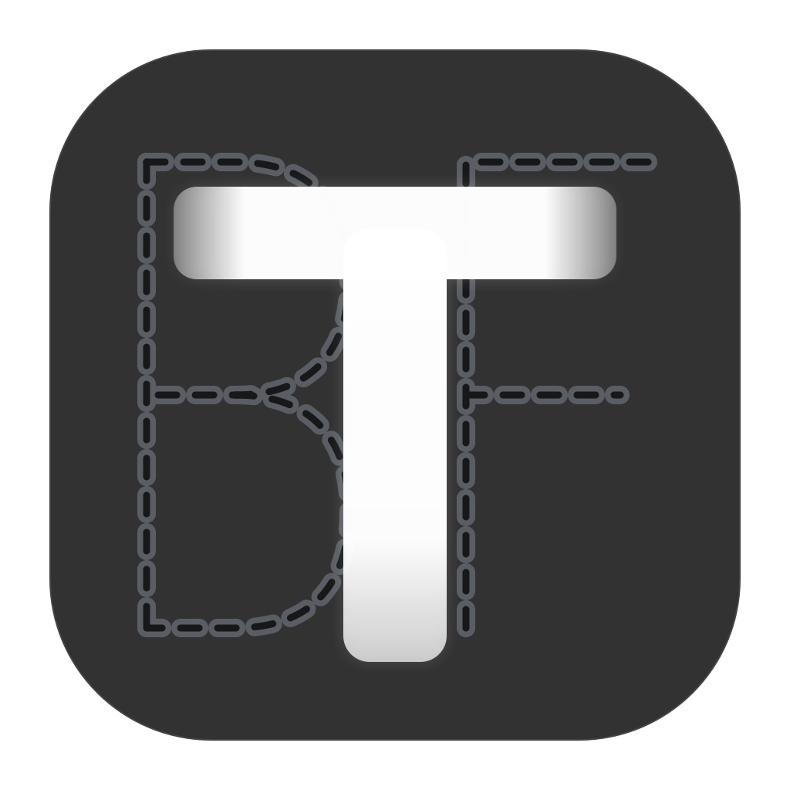
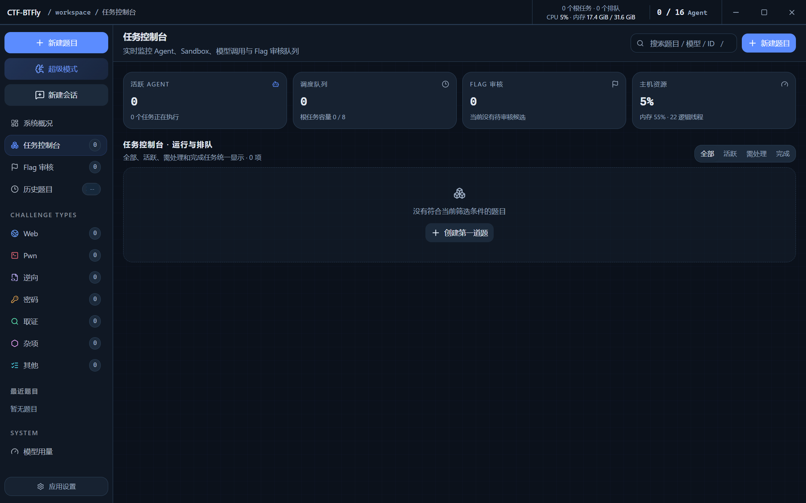

01应用内在线更新
设置 → 关于 → 在线更新。启动后自动首查，此后每 6 小时检查一次，也可手动触发。
- 清单用 Ed25519 签名，客户端内置公钥验签，验签失败一律拒绝更新
- 安装包按清单的 SHA256 与字节数逐一校验，不匹配即删除，不留半成品
- 替换失败自动回滚到更新前状态，并保留现场快照供排查

CTF-BTFlyWindows Agent Workbench 获取测试版
v2.9.5 最新测试版 · 2026.11
Windows 原生多 Agent
CTF 解题工作台
把模型、沙箱、终端、工具、证据与人工复核放进同一个本地工作流。无需 Docker Desktop 即可让标准 Agent、黑板协作和超级调度有序推进，并支持应用内在线更新与平台题目接入。
RELEASE 2.9.5
从 2.7.9 到 2.9.5，变化的不是界面皮肤，而是「更新怎么到位」「题目从哪来」「工具从哪装」这三件长期拖慢工作流的事。下面四项都已进入当前测试版。
设置 → 关于 → 在线更新。启动后自动首查，此后每 6 小时检查一次，也可手动触发。
AI 题目管家按平台形态选择建题链路，把「谁负责启动靶机环境」这件事明确下来。
对话式建题与比赛 API 批量导入合并到同一条入口，由意图路由判断走哪条路。
Windows 基础工具、WSL 工具与受管 Python 依赖各自独立，互不替代。
完整能力与版本对比见 功能全景；从 Docker 版或 1.3.1 迁移时的差异也集中在那里。
START HERE
第一次使用先解决授权，遇到问题先查问答。两页都不需要登录，也不需要额外依赖。
CTF-BTFLY 2.9.5 BETA
适用于获得授权的 CTF、靶场与安全研究。请勿扫描、攻击或导入未获授权的目标。
Windows x64 便携版 · 完整解压后运行